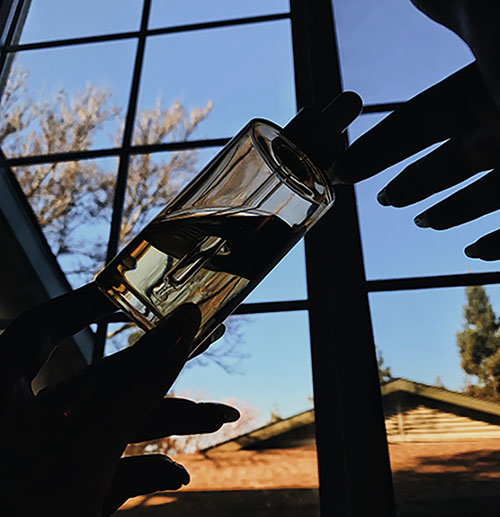
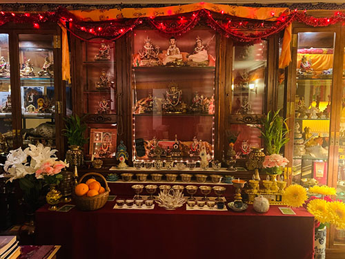

Every Picture - Visual Analysis Learning Journal
Entry 4
I thought this photo was interesting because of the silhouettes that were created with the hands and the bottle. Since the liquid in the bottle is clear, it gives a nice effect with the sky and outside peeking through and adds as a focal point in the photo. This signifies the “morning” portion of my page, which I tried to highlight with the morning sky in the background, shining through the hands. This photo relates to my collection because it’s a bottle that I use in my daily skincare routine, and my morning skincare routine is always something that I start my days with. For me, my skincare routine is a sign of peace, both in the morning and in the evening. In the morning, it wakes me up and prepares my skin for the day, while at night, it refreshes my skin while I’m sleeping. These routines signify a time of calmness and comfort, but at the same time, it reminds me that beauty comes from within, and just because I don’t have perfect skin does not mean that I am not beautiful. My skincare journey is far from over, but it is through this journey that taught me more about self love and embracing insecurities more than anything else has.
Being that I come from a family who practices Buddhism, this photo rang as quite familiar to me. I’ve gone to many temples growing up, and have an altar similar at home, so seeing those statues and offerings on the table were a familiar sight. I think the most interesting part are the many different statues on display, which perhaps signify a polythiestic religion. I also noticed that the colors red and yellow are used sparingly, but evidently, as both colors are prominent as lucky colors in Asian culture, which leads me to assume that this perhaps could be inside a Buddhist temple. It’s most obvious to me that this photo was taken in a religious setting, as this seems to be an altar that is set up, probably in a temple, to honor the gods and ancestors, serving as a place to pray in front of. However, I do wonder where this photo was taken, as there isn’t a clear indication if this was taken somewhere in America, or in another country, and if there was a special occasion to visit this location.